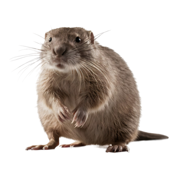
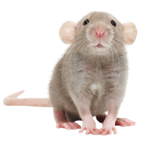
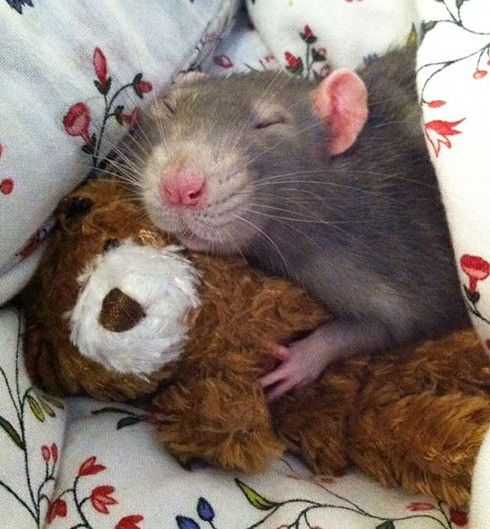

¡Bienvenido a mi página!

Gracias por visitar este sitio. Aquí encontrarás información, consejos y muchas cosas lindas sobre las ratas. ¡Espero que te guste mucho, amigo!

🐭 Curiosidades de las ratas:
Son muy inteligentes y pueden aprender su nombre.
Las ratas pueden reír cuando se les hace cosquillas.
Son muy limpias, pasan horas acicalándose.
🧼🐭 Cuidados para las ratas:
Proporciónales una jaula espaciosa y limpia con juguetes.
Dales una dieta equilibrada: mezcla de semillas, frutas y verduras.
Limpia su jaula al menos una vez por semana.
🍓🐭 Alimentación avanzada:
Evita darles chocolate, cafeína, cebolla o cítricos (algunas cosas son tóxicas para ellas).
Ofréceles snacks naturales como pedacitos de plátano o avena en hojuelas.
Proporciónales siempre agua limpia en un bebedero de botella.

🐭Conclusión:
Cuidar a una ratita es mucho más que alimentar o limpiar... es aprender a entenderlas, a conocer sus costumbres y a respetarlas.
Ellas no hablan con palabras, pero lo dicen todo con una mirada, con un gesto de confianza, con una siesta contigo.
Si las amas con paciencia y ternura, ellas te amarán sin condiciones.
Porque aunque sean pequeñas, su cariño es inmenso. 🐭💖